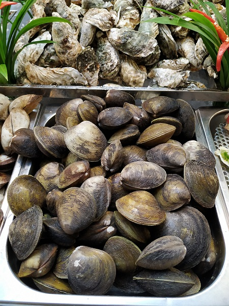
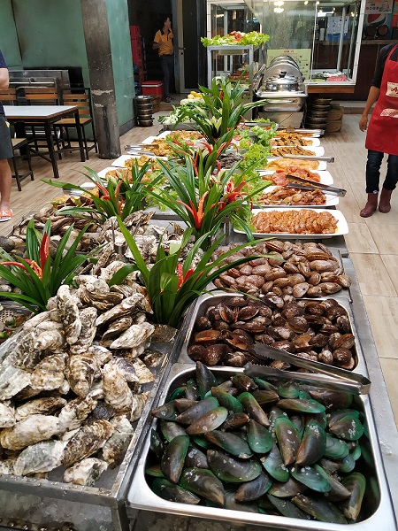
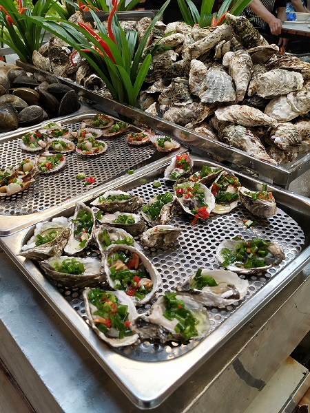
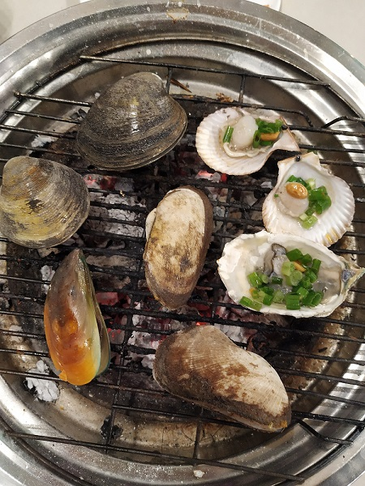
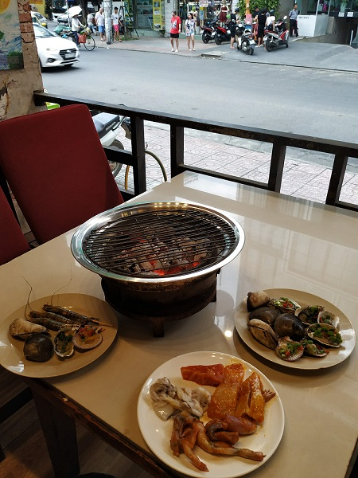
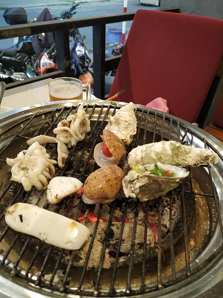

This day was remarcable for the fact that we visited a restaurant where we had to pay for an entrance and had as much food as we wanted. Most of all for us was interesting to try different tipes of shells and cook them by ourselves on a special hot spot in the center of table. One ticket for adult was 250000, beer was unlimited.
There were plenty of raw and cooked shells, I had no idea of their names, some types of fish, meat and unusual meat like crocodile or ostrich.



All food had to be fried on that coals. Staff cared that coals were hot, sometimes they helped us to cook shells. I always afraid that seafood I cooked would not be fried properly and thought that my shells were overcooked. The process was interesting and fun. Around us were sitting some huge Chinese and may be Viethamese families.



Summaries:
1 – Restaurants with fixed prices are good for tasting different types of dishes, I think they aren't profitable for just eating.
2 – Don't take french fried potato or something usual in fixed price restaurants. Usual food we eat constantly at home or the nearest restaurants. Try something new.